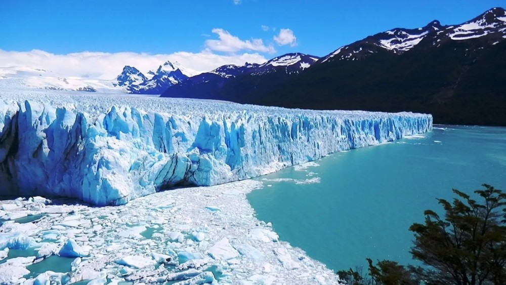
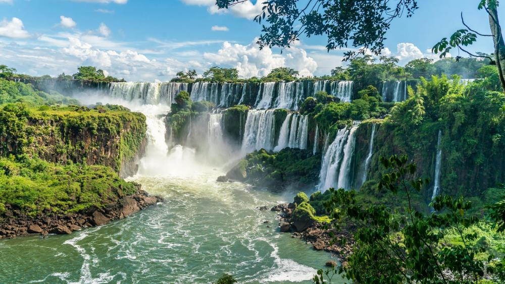
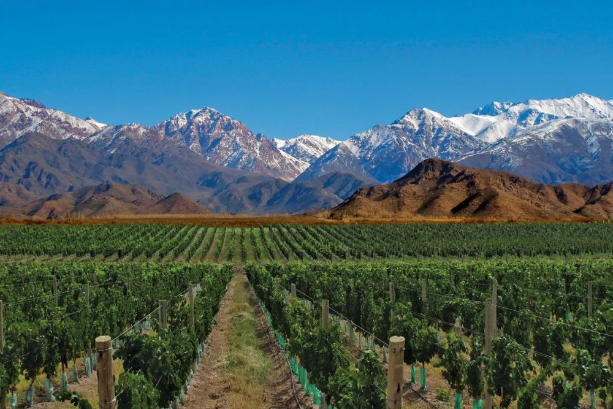
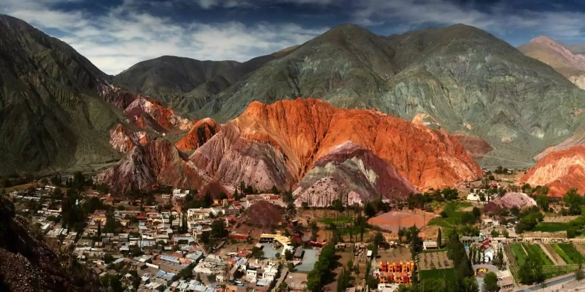
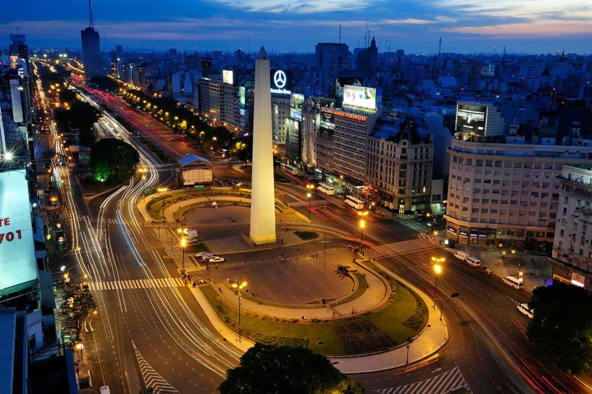

Destinos Turísticos
Guía informativa para conocer la geografía y los atractivos de cada región

Santa Cruz, Río Negro, Chubut, Neuquén, Tierra del
Fuego
-2°C a 15°C (invierno); 5°C a 22°C (verano)
Todo el año
Patagonia: El Fin del Mundo
La Patagonia argentina abarca más de 900.000 km² en el extremo sur del continente americano. Se divide en
Patagonia Andina —con montañas, lagos y glaciares— y Patagonia Extraandina —con estepas, mesetas y
costas atlánticas—. Esta región alberga algunos de los paisajes más espectaculares del planeta, producto
de la orogenia andina y las glaciaciones cuaternarias.
El Parque Nacional Los Glaciares, en Santa Cruz, protege 47 glaciares de la Cordillera de los Andes,
incluyendo el Perito Moreno, uno de los pocos glaciares del mundo en estado de equilibrio. Su frente de
5 km de ancho y 70 m de altura sobre el lago Argentino ofrece desprendimientos de hielo que pueden
observarse desde pasarelas a solo 300 metros de distancia.
Principales Atractivos
- Glaciar Perito Moreno: Único en el mundo por su accesibilidad y estado de
equilibrio. Actividades: minitrekking con crampones, navegación, safari fotográfico.
- San Carlos de Bariloche: Centro turístico histórico fundado en 1902. El Cerro
Catedral es el centro de ski más grande de Sudamérica con 120 km de pistas.
- Ushuaia: Ciudad más austral del mundo (54°48'S). Base para cruceros a la Antártida
y punto de inicio de la Ruta Nacional 3.
- Península Valdés: Reserva Natural declarada Patrimonio de la Humanidad. Avistaje de
ballenas francas australes (junio a diciembre), orcas, pingüinos y elefantes marinos.
- Parque Nacional Nahuel Huapi: El primer parque nacional de Argentina (1903). Lagos
Nahuel Huapi, Moreno y Gutiérrez con aguas de color turquesa.
Población
~2 millones de habitantes
Parques Nacionales
12 (Los Glaciares, Nahuel Huapi, Tierra del Fuego, etc.)
Patrimonios UNESCO
Los Glaciares, Cueva de las Manos, Península Valdés
La fauna patagónica incluye el guanaco, el cóndor andino, el puma, el huemul (ciervo nativo en peligro de
extinción) y el zorro colorado. En la costa atlántica, la colonia de pingüinos de Magallanes en Punta
Tombo es la más grande del continente fuera de la Antártida, con más de 800.000 ejemplares.

Misiones, Corrientes, Entre Ríos, Formosa, Chaco
15°C a 35°C (subtropical húmedo)
Marzo a noviembre (evitar calor extremo)
Litoral: Selvas, Ríos y Biodiversidad
La región del Litoral argentino se caracteriza por su clima subtropical húmedo, selvas en galería, ríos
caudalosos y una biodiversidad comparable a la del Amazonas. El bioma predominante es la Selva
Paranaense o Selva Misionera, que se extiende por el norte de Misiones y el este de Corrientes.
El río Paraná, con 4.880 km de longitud total, es el segundo más largo de Sudamérica después del
Amazonas. En su curso superior forma el límite natural entre Argentina y Paraguay, y alimenta los
Esteros del Iberá, el segundo humedal más grande del mundo después del Pantanal brasileño.
Principales Atractivos
- Cataratas del Iguazú: 275 saltos de agua en una extensión de 2.700 metros. La
Garganta del Diablo, con 80 metros de caída, concentra el 50% del caudal. El parque alberga 2.000
especies de plantas vasculares y 400 especies de aves.
- Esteros del Iberá: Sistema de 13.000 km² de humedales. Avistaje de yacarés overos,
carpinchos, lobos de río, ciervos de los pantanos y más de 350 especies de aves.
- Ruinas de San Ignacio Miní: Misión jesuítica guaraní fundada en 1610. Patrimonio de
la Humanidad desde 1984. Conserva la arquitectura barroca hispano-guaraní.
- El Palmar: Parque Nacional en Entre Ríos que protege la palmera yatay, endémica de
la región. Senderos entre palmares de hasta 10 metros de altura.
- Colón y Concordia: Ciudades termales a orillas del río Uruguay. Playas fluviales y
balnearios con aguas termales medicinales.
Esteros del Iberá
13.000 km² de humedales
Cataratas del Iguazú
1.700 m³/s de caudal promedio
Biodiversidad
~50% de la flora vascular del país
Fauna emblemática
Yaguareté, tapir, yacaré, tucán
La cultura del Litoral está marcada por la influencia guaraní, visible en la toponimia (Iguazú = "agua
grande", Paraná = "pariente del mar"), la gastronomía (chipá, mbeyú, sopa paraguaya) y las tradiciones
artesanales. El mate es consumido desde tiempos prehispánicos por los pueblos guaraníes.

Mendoza, San Juan, San Luis
0°C a 18°C (invierno); 15°C a 35°C (verano)
Marzo a mayo (vendimia); junio a septiembre (ski)
Cuyo: Montañas, Desiertos y Vinos de Altura
Cuyo es una región árida y montañosa ubicada al pie de la Cordillera de los Andes. Su nombre proviene del
araucano "cuyum" o "cuyu", que significa "tierra de desiertos". El clima es continental desértico, con
escasas precipitaciones (menos de 200 mm anuales) que se concentran en verano.
La provincia de Mendoza concentra el 70% de la producción vitivinícola argentina. La altitud de los
viñedos —entre 800 y 1.600 metros sobre el nivel del mar— genera amplitudes térmicas que favorecen la
concentración de azúcares y aromas en las uvas. El Malbec, cepa originaria de Cahors (Francia), encontró
en Mendoza su terroir ideal.
Principales Atractivos
- Aconcagua (6.961 m): Montaña más alta de América y fuera del Sistema Himalaya. El
Parque Provincial Aconcagua recibe montañistas de todo el mundo. El trekking base camp no requiere
experiencia técnica.
- Ruta del Vino: 3 circuitos turísticos (Alto Valle del Río Mendoza, Valle de Uco,
San Rafael) con más de 1.500 bodegas. La Fiesta Nacional de la Vendimia se celebra en marzo.
- Ischigualasto: "Valle de la Luna" en San Juan. Formaciones geológicas de 200
millones de años. Patrimonio de la Humanidad junto con Talampaya.
- Talampaya: Cañón de 150 metros de altura en La Rioja (aunque geográficamente
cercano a Cuyo). Pinturas rupestres de pueblos diaguitas.
- Las Leñas: Centro de ski con 29.500 hectáskisables y la mejor nieve en polvo del
país. Temporada: junio a octubre.
Producción vitivinícola
~1.500 bodegas en Mendoza
Aconcagua
6.961 msnm - cumbre más alta de América
Días de sol
~320 días soleados por año
Riego
Sistema de canales prehispánico (acequias)
La gastronomía cuyana destaca por el chivito al asador (cabrito), la trucha de los ríos de montaña, y las
aceitunas y aceite de oliva de San Juan. El tradicional "chivo al disco" es una preparación campera que
se cocina lentamente en discos de arado.

Jujuy, Salta, Tucumán, Catamarca, Santiago del Estero, La
Rioja
10°C a 28°C (verano); -5°C a 18°C (invierno en
altura)
Abril a octubre (evitar lluvias de verano)
Norte Argentino: Puna, Quebradas y Tradición Andina
El Noroeste Argentino (NOA) es una región de alta montaña, valles encajonados y la Puna, un altiplano
árido que se extiende por Jujuy, Salta y Catamarca. La geología expone formaciones de hasta 600 millones
de años, con colores que van desde el rojo óxido hasta el verde cobre, producto de la mineralización.
La Quebrada de Humahuaca, declarada Patrimonio Cultural de la Humanidad en 2003, es un corredor de 155 km
que fue camino principal del Imperio Inca (Qhapaq Ñan). Pueblos como Purmamarca, Tilcara, Humahuaca y
Iruya conservan arquitectura colonial y tradiciones indígenas que datan de tiempos prehispánicos.
Principales Atractivos
- Quebrada de Humahuaca: 155 km de formaciones geológicas multicolores. El Cerro de
los Siete Colores en Purmamarca es el emblema de la región.
- Salinas Grandes: Salar de 212 km² a 3.450 msnm. Tercer salar más grande del mundo.
La superficie de sal blanca crea efectos ópticos únicos.
- Cafayate y Quebrada de las Conchas: Formaciones geológicas como el Anfiteatro, la
Garganta del Diablo y los Castillos. Viñedos a 1.700 msnm producen el Torrontés, vino blanco
aromático emblemático.
- Tren a las Nubes: Ferrocarril construido en 1921 a 4.220 msnm. Cruza la La
Polvorilla, viaducto de 224 metros de longitud y 64 de altura.
- Cueva de las Manos: En Santa Cruz (aunque culturalmente vinculada al sur del NOA).
Pinturas rupestres de 9.000 años de antigüedad. Patrimonio de la Humanidad.
Altura máxima
6.739 msnm (Nevado de Chañi)
Quebrada de Humahuaca
155 km de patrimonio cultural
Tren a las Nubes
4.220 msnm - ruta más alta de América
Torrontés
Cepa nativa argentina de altura
La cultura andina del NOA se manifiesta en las celebraciones de la Pachamama (agosto), el carnaval con
diablos bailando (Humahuaca), y la artesanía en tejidos de lana de llama y alpaca. La gastronomía
incluye el locro (guiso de maíz y zapallo), las empanadas salteñas (horno de barro), y el chicharrón de
cerdo.

Ciudad Autónoma de Buenos Aires y Gran Buenos Aires
8°C a 17°C (invierno); 18°C a 30°C (verano)
Todo el año (primavera y otoño ideales)
Buenos Aires: Historia, Arquitectura y Cultura Urbana
Fundada en 1536 y refundada en 1580, Buenos Aires es la capital política y cultural de Argentina. Con 48
barrios oficiales y una población de 3 millones en la ciudad y 15 millones en el Gran Buenos Aires, es
una de las metrópolis más grandes de Latinoamérica. Su arquitectura refleja oleadas inmigratorias
italianas, españolas, francesas y británicas.
La ciudad se desarrolló alrededor del Puerto de Buenos Aires, que hasta mediados del siglo XX concentraba
el comercio exterior argentino. Barrios como La Boca, San Telmo y Puerto Madero fueron directamente
moldeados por esta actividad portuaria. Hoy, Buenos Aires es el centro financiero, editorial, teatral y
gastronómico del país.
Principales Atractivos
- Teatro Colón: Inaugurado en 1908, es considerado uno de los cinco mejores teatros
de ópera del mundo por su acústica. Arquitectura ecléctica con influencias renacentista, barroca y
griega.
- San Telmo y La Boca: San Telmo conserva casas de fines del siglo XIX y la feria de
antigüedades más grande de Latinoamérica (domingos). La Boca es cuna del tango y del Club Atlético
Boca Juniors.
- Recoleta: Barrio de arquitectura francesa con el Cementerio de la Recoleta, donde
descansan Eva Perón, Adolfo Bioy Casares y otras figuras históricas. El Museo Nacional de Bellas
Artes alberga la colección más importante de arte argentino.
- Avenida 9 de Julio: Con 140 metros de ancho, es la avenida más ancha del mundo. El
Obelisco (1936) conmemora el cuarto centenario de la fundación de la ciudad.
- Reserva Ecológica Costanera Sur: 350 hectáreas de humedales recuperados en Puerto
Madero. Más de 300 especies de aves y el único humedal natural dentro de una ciudad de
Latinoamérica.
Población
~3 millones (CABA); ~15 millones (GBA)
Teatros
Más de 300 salas teatrales activas
Librerías
~750 librerías (más librerías per cápita del mundo)
Gastronomía
~4.000 restaurantes y bares
Buenos Aires es la ciudad con más librerías per cápita del mundo según la UNESCO, y la que más cafés
literarios conserva. El subte (metro), inaugurado en 1913, fue el primero de Latinoamérica, el
hemisferio sur y el mundo de habla hispana. La vida cultural incluye más de 100 museos, 300 teatros y
una escena de música independiente reconocida internacionalmente.